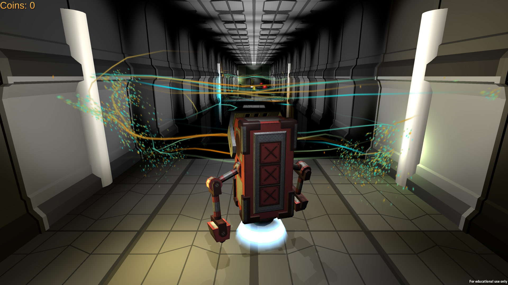
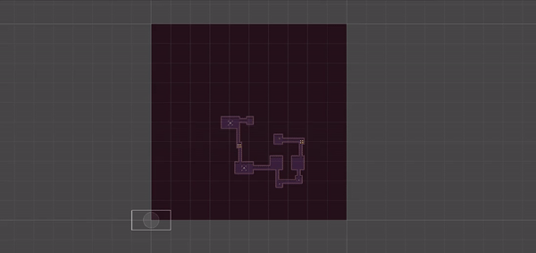

The Good Robot
First 3D Cross-Platform Game Created
This is a 3D platform game that can be played on PC, Web and Android devices. The goal of this game is to collect coins and reach the end of the room while avoiding obstacles and enemies.
Tea Run
First Group Production

This is a 2.5D platform game that can be played on PC. The goal of this game is to earn as many points as possible within the time limit by collecting tea bags and deliver them to customers while avoiding obstacles.
Procedural Dungeon Generator
First Complex Game System
This is a procedural dungeon generator that generates dungeons for 2D dungeon crawler games based on the tiles that the user provides.